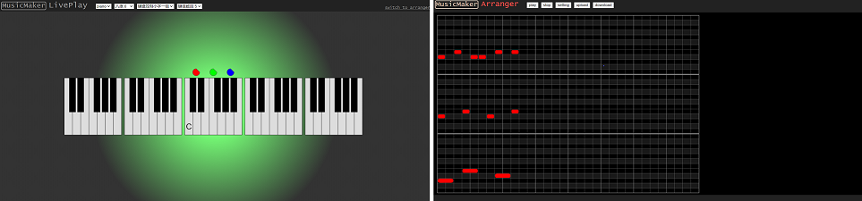

MusicMaker是我打算做的一个可以音乐展示, 即时演奏和简单编曲的软件, 这是我记录编写过程的文章.
MusicMaker简介
MusicMaker是我打算做的一个可以音乐展示, 即时演奏和简单编曲的软件, 打算使用Web前端技术做, 跨Web和所有Native端. 做这个项目的目的有两个, 一个是为了实现自己的这个想法, 另一个是练习Web前端技术. 而且这种自己从头规划, 慢慢制作是很有成就感的!
自己玩的项目, 不好说啥时候更新, 大家看个乐就行了.
项目地址: https://github.com/sien75/musicmaker
本次commit版本: https://github.com/sien75/musicmaker/tree/7d6d162c407fc87a386fa6d4d4189c6ea2367150
Docs: https://sien75.github.io/musicmaker
项目设想
之前第一版的MusicMaker分为两个部分: LivePlay和Arranger. LivePlay部分是一个键盘乐器, 可以即时演奏, 算是基本完成的. Arranger部分嘛…, 我是想做一个编曲+展示的页面. 想做的功能挺多的, 但是做到的只是个半成品.

第一版使用的技术是最基础的HTML+CSS+JavaScript, 搁置了很久, 但是我是一直想把这个东西做下去的. 两年过去了, 我现在已经接触到了更多的前端技术, 所以我打算另起炉灶, 用新技术重新构思, 做第二版!
这次我带来了几个超强的武器: Webpack, React, TypeScript. 项目搭建伊始要规划的事很多, 但主要工作就是把Webpack配置好. 在Webpack的配置过程中, 就能把项目的基本要素都串起来.
不过一切的开始, 应该是 – 新建一个文件夹:
当然, 由于我是从Github上直接拉下来的项目, 所以是有git版本控制的. 我把项目中的文件和文件夹放到另一个分支备份, 然后把master分支清空了.
如果是对于一个没有git的空文件夹, 那么第一步无疑是执行以下命令:
git init |
在有了git的版本控制后, 我们接下来要干什么呢? 没错, 接下来要进行npm初始化, 生成package.json文件, 这个文件是node项目的核心文件:
npm init |
这样一个node项目就初始化完成了! 接下来进行目录规划:
|- musicmaker |
src, 目录下是MusicMaker的库原始代码, 这一部分是Musicmaker的核心功能部分examples, 目录下是对MusicMaker库的使用, 也就是说这一部分是用于向其他人介绍使用方法, 并展示效果的build/lib, 目录下是生成的库文件build/doc, 目录下是构建好的examples页面(即Docs页), 这一部分会直接部署到项目的GitHub Page上
如何构建
一个项目的基础骨架搭建好了, 接下来就是注入灵魂的时候了:
npm i -D webpack webpack-cli webpack-dev-server |
我打算使用Webpack构建Docs页, 并用Webpack构建既可以使用<script>标签引入, 也可以使用import引入的MusicMaker库.
但是使用MusicMaker库依赖React, 直接在<script>标签里写JSX, 不是一件明智的行为. 所以我取消了库可以用<script>标签引入的打算.
我一开始也打算用Webpack构建MusicMaker库, 但是Webpack会把一个entry打包成一个文件输出, 无法保持原目录结构, 也无法生成.d.ts文件, 所以构建库需要另选工具.
使用Typescript的命令行工具tsc可以直接生成.d.ts文件, 所以这是一个构建库的不错的工具. 对于库来说CSS和JavaScript的构建是两条生产线, 我使用sass命令行工具来实现.scss文件的编译.
package.json内容如下:
// package.json |
Webpack的主要功能有两个: A – “开发”到”发布”的转换, B – 实时观察”开发”的效果. 在这里面, start是使用的B功能, build是使用的A功能.
start是会以examples文件夹的文件为入口, 而examples内的文件会依赖src内的核心库文件. 这个是用于实时开发, 观察Docs页的效果. 当然我也会借用此来调试MusicMaker库.
build就是构建Docs页, start是即时开发, 而build则是输出构建好的文件, 构建好的页面会直接部署到Github Page上. 和start一样, build会以examples文件夹的文件为入口, 而examples内的文件会依赖src内的核心库文件.
build:lib是构建MusicMaker库的命令, 这个命令都会以src目录下的文件为入口, 涉及src目录下的文件, 但不会涉及examples下的文件. 这里3个命令作用为:
rm -rf build/lib/*, 删除原有的库文件tsc --project tsconfig.lib.json, 使用tsc编译.tsx生成.js和.d.ts文件sass src:build/lib, 使用sass编译.scss生成.css
项目的Webpack配置文件都会放在webpack文件夹内, entries.js, plugins.js和loaders.js这3个基本的配置文件, 是会被各config.xxx.js依赖的.
项目使用Babel来配合Webpack编译.tsx文件, Babel配置文件为项目根目录下的.babelrc文件.
项目的TypeScript配置文件为tsconfig.json, 不过这个只是用于智能提醒编辑器的, 真正的tsc编译时使用的配置文件是tsconfig.lib.json.
上述提及的配置文件位置如下: |
接下来我会详细描述项目的各个配置项.
Webpack配置 - entries.js
先从Webpack的配置说起吧.
首先看entries.js, 我会把所有的entry和output以及resolve写在这里. 基本内容如下:
// entries.js |
当然Docs页是个多页面情况, 肯定不止一个entry, 以后会动态添加的. 设置别名musicmaker是为了在引入MusicMaker库的时候更方便, 更接近使用场景:
// 设置的话 |
Webpack配置 - plugins.js
我会把所有plugins和optimization的配置放在这里.
项目需要安装4个插件: html-webpack-plugin, clean-webpack-plugin, mini-css-extract-plugin和css-minimizer-webpack-plugin, 首先安装它们:
npm i -D html-webpack-plugin@next clean-webpack-plugin mini-css-extract-plugin css-minimizer-webpack-plugin |
HTML模板插件和清空输出文件夹插件
先看一下前两个插件, plugins.js文件包含以下代码:
// plugins.js |
CleanWebpackPlugin是用来在清除旧的构建文件的, 而HtmlWebpackPlugin是创建主html文件的.
JavaScript代码分离
代码分离是Webpack的一个很有用的功能. 试想一下, 两个entry共用一个依赖库, 然后把依赖库各自打包到自己的bundle文件里. 这种代码重复的情况, 造成了打包体积过大, 浪费存储和网络资源, 且很不优雅.
我们在这里用到了SplitChunksPlugin这个插件(无需额外安装), 这个插件可以把共用的依赖库提取出来, 使一份代码仅被打包一次, 避免JavaScript代码重复. 在plugins.js里新加入下面的代码:
// plugins.js |
CSS代码分离
同样的, 项目也需要对CSS代码进行分离操作. 对CSS代码分离需要修改plugins和loader两部分, 出于速度方面的考虑, 仅在生产模式启用这一功能:
// plugins.js |
代码压缩
Webpack5会对生产模式下输出的JavaScript代码进行压缩, 这里需要配置的是CSS的代码压缩. 这里使用到的插件是css-minimizer-webpack-plugin, 修改plugins.js代码如下:
// plugins.js |
完整配置
至此, plugins.js完成, 完整的配置文件如下:
// plugins.js |
Webpack配置 - loaders.js
接下来是很重要的Loader配置, 目前我想到的就是解析.tsx和.scss, 也就是解析TypeScript, React和Sass, 后续如果需要解析其他类型文件的话再进一步修改. 首先把本体们安装上:
npm i -D typescript |
解析.tsx
我会使用Babel对TypeScript, React和ES新特性进行解析, 安装命令如下:
npm i -D babel-loader @babel/core @babel/preset-env @babel/preset-react @babel/preset-typescript |
@babel/core是Babel的核心模块@babel/preset-react是Babel用于编译React的preset@babel/preset-typescript是Babel用于编译TypeScript的presetcore-js和regenerator-runtime是为了使用如Promise等新特性而需引入的polyfillbabel-loader是Webpack使用Babel的Loader
现在编写loader.js配置文件, 内容如下:
// loader.js |
在项目根目录创建Babel的配置文件.babelrc, 内容如下:
// .babelrc |
解析.scss
解析Sass需要安装3个Loader:
npm i -D sass-loader css-loader style-loader |
它们的作用分别如下:
sass-loader, 把Sass编译成CSScss-loader, 把CSS转换成JavaScriptstyle-loader, 把JavaScript转换成<style>节点
在生产环境把”CSS in JavaScript”转换成CSS文件需要mini-css-extract-plugin插件, 这个我们在代码分离部分说过.
安装完Loader后, 再编写loaders.js文件, 新增解析Sass的部分:
// loader.js |
Webpack实际配置文件
前面说的是基础的配置, 只不过是分到了3个文件里, 现在要把这3个文件整合起来. 项目有2个Webpack命令, 需要2个配置文件, 内容很好理解:
// config.doc.js |
// config.doc.dev.js |
在config.doc.dev.js里, 要配置好用于实时开发的devtool和devServer.
TypeScript配置
使用Babel的TypeScript插件是不会顾及tsconfig.json的内容的, 我们这里有2个TypeScript配置文件, 内容基本一致. tsconfig.json文件内容如下:
// tsconfig.json |
关于VSCode插件
我在项目里用到了下面的插件:
ESLint
ESLint是用于JavaScript/TypeScript/JSX/TSX/CSS/Sass等的语法检测的, 可以有效防止一些错误, 需先通过npm安装:
npm i -D eslint |
我把ESLint安装到了项目本地目录, 你也可以把它安到全局. 安装完成以后, 初始化ESLint. 在项目根目录执行以下命令:
npx eslint --init |
根据项目选择合适的选项, 比如我的这个项目是要用到React和TypeScript的, 那相应的选项要选择true. 命令执行后会生成一个.eslintrc.js文件.
之后我们可以安装VSCode的ESLint插件了, 插件会根据.eslintrc.js的配置对项目的文件语法进行检测, 对不符合规则的代码提出警告.
Prettier
安装VSCode的Prettier插件, 可以使代码的风格更加规范, 增强可读性. Prettier并不会对代码的语法进行检测, 它只是去对代码进行无语义变更的格式化.
安装Prettier的命令如下:
npm i -D prettier |
打开VSCode设置的Format On Save, 这样就可以每次保存的时候格式化代码了. 说实话写代码的时候不去关注格式, 之后一个CMD/Ctrl + s, 代码立刻变得漂亮, 这感觉是很棒的.